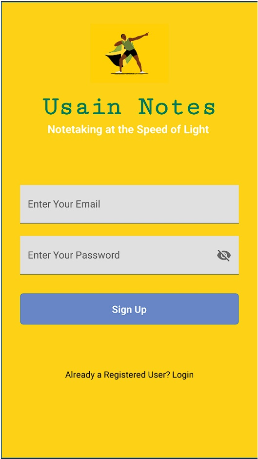
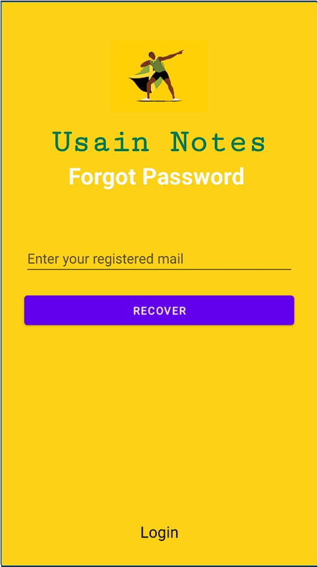
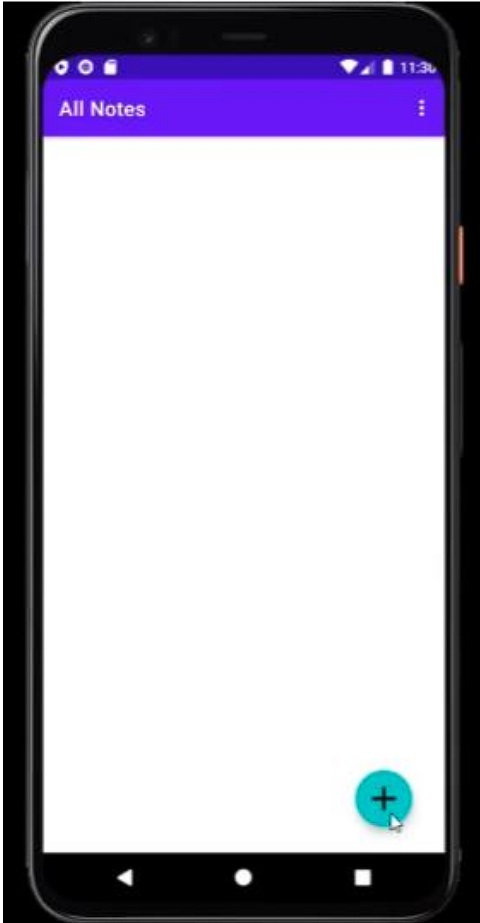
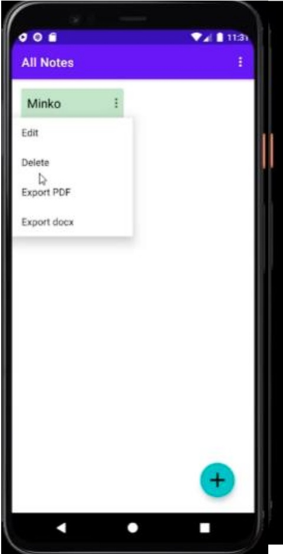
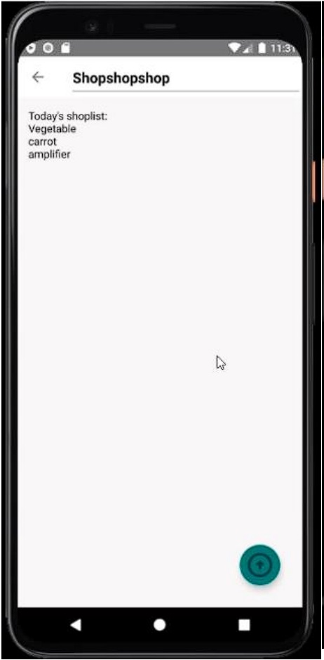
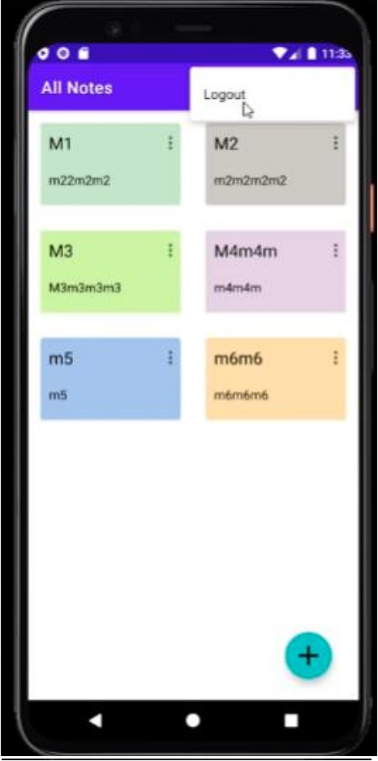

Usain Notes
Usain Notes is a user-friendly note-taking application designed to streamline the process of capturing and organizing thoughts, ideas, and tasks. With its intuitive interface and robust features, Usain Notes aims to enhance productivity and facilitate seamless note management for individuals and teams.
Prototype Online Check-up
SalamatDoc is a revolutionary mobile application designed to provide convenient and accessible healthcare solutions right at your fingertips. With SalamatDoc, you can connect with qualified healthcare professionals, schedule appointments, and access a wide range of healthcare resources all from the comfort of your home.